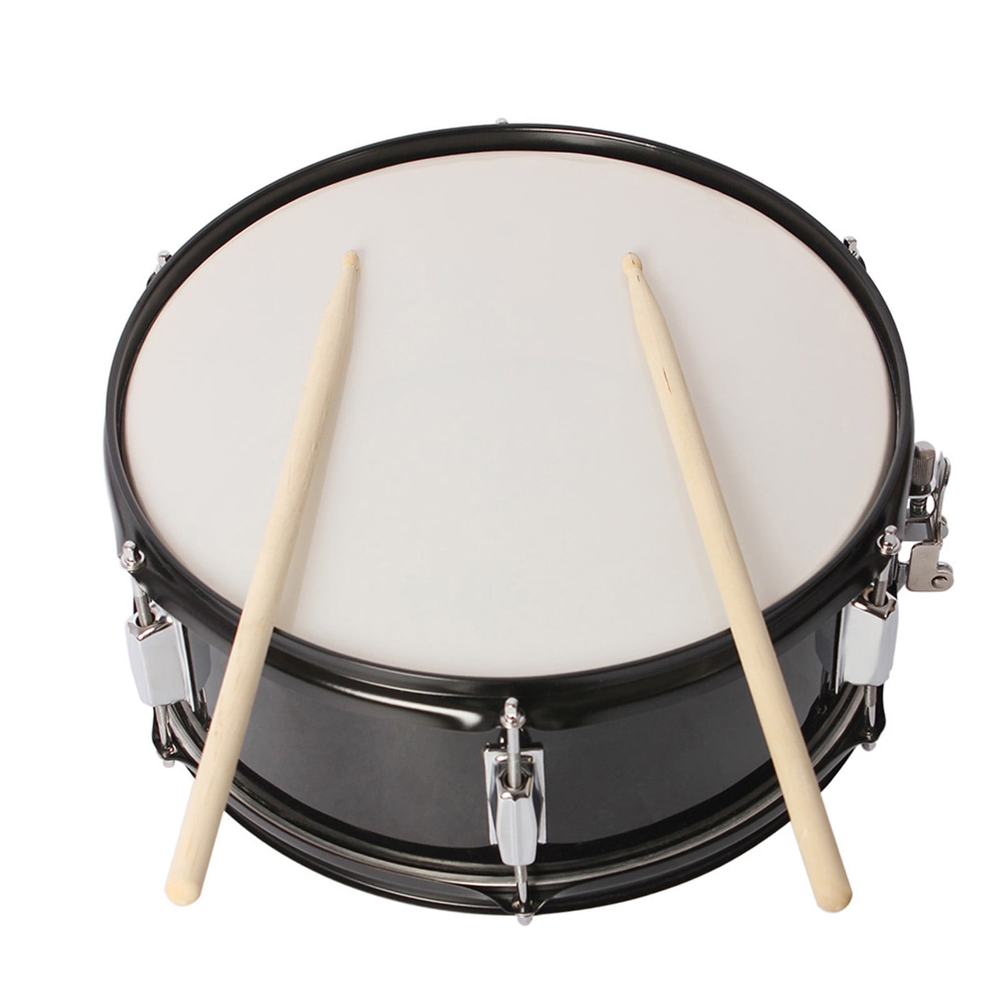

Bass Drum
In the heart of the Beverly Hills Marching Band, the bass drum resonates as a powerful rhythmic anchor, infusing performances with energy and drive. Its thunderous beats pulse through the community, drawing listeners into the music and igniting a sense of unity. Whether setting the tempo for parades or adding depth to ensemble pieces, the bass drum commands attention and instills a sense of excitement. Beyond its musical role, the bass drum serves as a symbol of inclusivity, inviting individuals of all backgrounds to join in the rhythmic celebration. Through its commanding presence, Beverly Hills Marching Band unites and uplifts communities, forging bonds through the universal language of music.
baritone horn
Within the Beverly Hills Marching Band, the baritone horn serves as a melodic cornerstone, blending rich harmonies and adding depth to the ensemble's sound. Its warm, resonant tones resonate through the community, evoking a sense of nostalgia and connection. Whether carrying expressive melodies or providing a solid foundation in the lower register, the baritone horn contributes to the band's dynamic performances with grace and versatility. Beyond its musical role, the baritone horn fosters inclusivity and camaraderie, inspiring individuals of all ages and backgrounds to join in the musical journey. Through its melodic presence, Beverly Hills Marching Band continues to unite and uplift communities, spreading joy and harmony through the power of music.
Snare Drum

In the heartbeat of the Beverly Hills Marching Band, the snare drum sets the pulse and drives the rhythm, infusing performances with energy and excitement. Its crisp, percussive beats resonate throughout the community, creating a sense of unity and momentum. Whether providing the backbone of marching cadences or adding dynamic flair to ensemble pieces, the snare drum commands attention and instills a sense of anticipation. Beyond its musical role, the snare drum serves as a symbol of collaboration, inspiring individuals to come together and create something greater than themselves. Through its rhythmic presence, Beverly Hills Marching Band strengthens bonds and uplifts communities, spreading joy and inspiration through the power of music.

-modified.png)